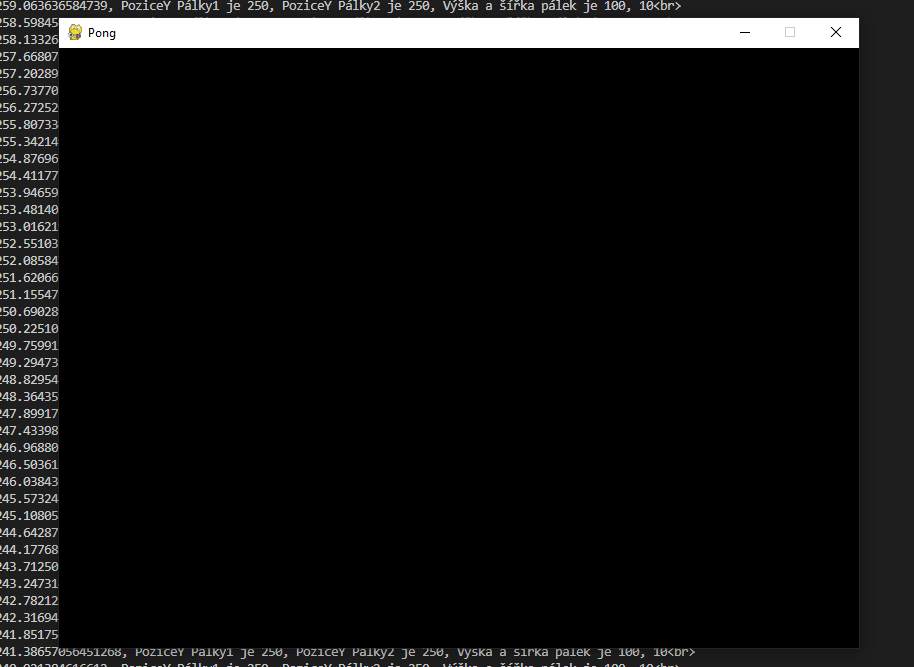

K dokončení tohoto kurzu budete potřebovat Python s knihovnami Pygame a Random.
Vytvoř proměnné na počítání skóre pro Hráče1 a Hráče2 (číselně).
Kód pro ověření:
print(f"Hráč 1 má skóre:{Hrac1Skore} a Hráč 2 má skóre:{Hrac2Skore}")
Výsledek:
Hráč 1 má skóre:0 a Hráč 2 má skóre:0
Vytvoř proměnnou pro pozici míčku na ose X (můžeme si tuto proměnnou představit jako vzdálenost míčku od levé hrany obrazovky)
Vytvoř podmínky pro:
Hráč1 získá bod, pokud je vzdálenost míčku větší než 10 (míček je hodně vpravo)
Hráč2 získá bod, pokud je vzdálenost míčku menší než 0 (míček je hodně vlevo)
Pokud některý z hráčů získá bod, nastav "pozici míčku na ose X" na hodnotu 5 (v budoucnu tato hodnota bude střed obrazovky)
Kód pro ověření:
print(f"Hráč 1 má skóre:{Hrac1Skore} a Hráč 2 má skóre:{Hrac2Skore} a PoziceX Míčku je {micek_poziceX}")
Výsledek:
Hráč 1 má skóre:0 a Hráč 2 má skóre:0 a PoziceX Míčku je 5
Vytvoř cyklus(for) který přičte 1 k PoziciX Míčku, vypočítá a vypíše stav vzdálenosti a bodů (toto celé desetkrát)
Kód pro ověření:
print(f"Hráč 1 má skóre:{Hrac1Skore} a Hráč 2 má skóre:{Hrac2Skore} a PoziceX Míčku je {micek_poziceX}")
Výsledek:
Hráč 1 má skóre:0 a Hráč 2 má skóre:0 a PoziceX Míčku je 6
Hráč 1 má skóre:0 a Hráč 2 má skóre:0 a PoziceX Míčku je 7
Hráč 1 má skóre:0 a Hráč 2 má skóre:0 a PoziceX Míčku je 8
Hráč 1 má skóre:0 a Hráč 2 má skóre:0 a PoziceX Míčku je 9
Hráč 1 má skóre:0 a Hráč 2 má skóre:0 a PoziceX Míčku je 10
Hráč 1 má skóre:1 a Hráč 2 má skóre:0 a PoziceX Míčku je 5
Hráč 1 má skóre:1 a Hráč 2 má skóre:0 a PoziceX Míčku je 6
Hráč 1 má skóre:1 a Hráč 2 má skóre:0 a PoziceX Míčku je 7
Hráč 1 má skóre:1 a Hráč 2 má skóre:0 a PoziceX Míčku je 8
Nahraď cyklus for cyklem while
Cyklus for má využití pro přesný počet opakování zatímco cyklus while "poběží" dokud bude podmínka platit. Pro naše potřeby bude lepší využít while
Kód pro ověření:
print(f"Hráč 1 má skóre:{Hrac1Skore} a Hráč 2 má skóre:{Hrac2Skore} a PoziceX Míčku je {micek_poziceX}")
Výsledek:
Hráč 1 má skóre:0 a Hráč 2 má skóre:0 a PoziceX Míčku je 6
Hráč 1 má skóre:0 a Hráč 2 má skóre:0 a PoziceX Míčku je 7
Hráč 1 má skóre:0 a Hráč 2 má skóre:0 a PoziceX Míčku je 8
Hráč 1 má skóre:0 a Hráč 2 má skóre:0 a PoziceX Míčku je 9
Hráč 1 má skóre:0 a Hráč 2 má skóre:0 a PoziceX Míčku je 10
Hráč 1 má skóre:1 a Hráč 2 má skóre:0 a PoziceX Míčku je 5
Hráč 1 má skóre:1 a Hráč 2 má skóre:0 a PoziceX Míčku je 6
Hráč 1 má skóre:1 a Hráč 2 má skóre:0 a PoziceX Míčku je 7
Hráč 1 má skóre:1 a Hráč 2 má skóre:0 a PoziceX Míčku je 8
Hráč 1 má skóre:1 a Hráč 2 má skóre:0 a PoziceX Míčku je 9
Hráč 1 má skóre:1 a Hráč 2 má skóre:0 a PoziceX Míčku je 10
Hráč 1 má skóre:2 a Hráč 2 má skóre:0 a PoziceX Míčku je 5
...
Když se míček dostane na jednu stranu tak se odrazí a až pak se vrátí doprostřed.
Vytvoříme si proměnnou kterou budem přičítat k PoziciX Míčku (místo toho aby jsme přičítali 1 tak budem přičítat proměnnou s hodnotou 1)
Když se míček dostane na konec tak proměnnou vynásobíme -1 aby se míček po návratu pohyboval opačným směrem.
Kód pro ověření:
print(f"Hráč 1 má skóre:{Hrac1Skore} a Hráč 2 má skóre:{Hrac2Skore} a PoziceX Míčku je {micek_poziceX}")
Výsledek:
Hráč 1 má skóre:0 a Hráč 2 má skóre:0 a PoziceX Míčku je 6
Hráč 1 má skóre:0 a Hráč 2 má skóre:0 a PoziceX Míčku je 7
Hráč 1 má skóre:0 a Hráč 2 má skóre:0 a PoziceX Míčku je 8
Hráč 1 má skóre:0 a Hráč 2 má skóre:0 a PoziceX Míčku je 9
Hráč 1 má skóre:0 a Hráč 2 má skóre:0 a PoziceX Míčku je 10
Hráč 1 má skóre:1 a Hráč 2 má skóre:0 a PoziceX Míčku je 5
Hráč 1 má skóre:1 a Hráč 2 má skóre:0 a PoziceX Míčku je 4
Hráč 1 má skóre:1 a Hráč 2 má skóre:0 a PoziceX Míčku je 3
Hráč 1 má skóre:1 a Hráč 2 má skóre:0 a PoziceX Míčku je 2
Hráč 1 má skóre:1 a Hráč 2 má skóre:0 a PoziceX Míčku je 1
Hráč 1 má skóre:1 a Hráč 2 má skóre:0 a PoziceX Míčku je 0
Hráč 1 má skóre:1 a Hráč 2 má skóre:1 a PoziceX Míčku je 5
Hráč 1 má skóre:1 a Hráč 2 má skóre:1 a PoziceX Míčku je 6
Hráč 1 má skóre:1 a Hráč 2 má skóre:1 a PoziceX Míčku je 7
Hráč 1 má skóre:1 a Hráč 2 má skóre:1 a PoziceX Míčku je 8
Hráč 1 má skóre:1 a Hráč 2 má skóre:1 a PoziceX Míčku je 9
Hráč 1 má skóre:1 a Hráč 2 má skóre:1 a PoziceX Míčku je 10
Hráč 1 má skóre:2 a Hráč 2 má skóre:1 a PoziceX Míčku je 5
...
Vytvoř smyčku která se ukončí když jeden z hráčů bude mít skóre 20.
Této smyčce budeme říkat hlavní protože se v ní bude odehrávat celá hra.
Kód pro ověření:
print(f"Hráč 1 má skóre:{Hrac1Skore} a Hráč 2 má skóre:{Hrac2Skore} a PoziceX Míčku je {micek_poziceX}")
Výsledek:
Hráč 1 má skóre:0 a Hráč 2 má skóre:0 a PoziceX Míčku je 6
Hráč 1 má skóre:0 a Hráč 2 má skóre:0 a PoziceX Míčku je 7
Hráč 1 má skóre:0 a Hráč 2 má skóre:0 a PoziceX Míčku je 8
Hráč 1 má skóre:0 a Hráč 2 má skóre:0 a PoziceX Míčku je 9
Hráč 1 má skóre:0 a Hráč 2 má skóre:0 a PoziceX Míčku je 10
Hráč 1 má skóre:1 a Hráč 2 má skóre:0 a PoziceX Míčku je 5
...
...
Hráč 1 má skóre:19 a Hráč 2 má skóre:18 a PoziceX Míčku je 0
Hráč 1 má skóre:19 a Hráč 2 má skóre:19 a PoziceX Míčku je 5
Hráč 1 má skóre:19 a Hráč 2 má skóre:19 a PoziceX Míčku je 6
Hráč 1 má skóre:19 a Hráč 2 má skóre:19 a PoziceX Míčku je 7
Hráč 1 má skóre:19 a Hráč 2 má skóre:19 a PoziceX Míčku je 8
Hráč 1 má skóre:19 a Hráč 2 má skóre:19 a PoziceX Míčku je 9
Hráč 1 má skóre:19 a Hráč 2 má skóre:19 a PoziceX Míčku je 10
Hráč 1 má skóre:20 a Hráč 2 má skóre:19 a PoziceX Míčku je 5
Vytvoř proměnnou pro pozici míčku na ose Y (můžeme si tuto proměnnou představit jako vzdálenost míčku od horní hrany obrazovky)
A proměnnou pro pohyb míčku vertikálně(na ose Y)
Vytvoř funkci která bude mít 4 vstupy(pohyb míčku vertikálně, pozice míčku na ose Y, horní okraj obrazovky(prozatím 0), spodní okraj obrazovky(prozatím 10)) a podmínky pro:
Míček se odrazí:
Pokud je pohyb míčku vertikálně menší než 0 a zároveň je vzdálenost míčku menší nebo rovna hornímu okraji (míček je hodně nahoře) nebo
Pokud je pohyb míčku vertikálně větší jak 0 a zároveň je vzdálenost míčku větší nebo rovna spodnímu okraj (míček je hodně dole)
Tyto 2 proměnné zamezí tomu aby se míček odrážel mimo obrazovku do nekonečna.
Odraz zase provedeme vynásobením proměnné pro pohyb míčku vertikálně -1 a "vrátíme" ji z funkce pomocí return.
Pokud některý z hráčů získá bod, nastav "pozici míčku na ose Y" na hodnotu 5 (v budoucnu tato hodnota bude střed obrazovky)
Kód pro ověření:
print(f"Hráč 1 má skóre:{Hrac1Skore} a Hráč 2 má skóre:{Hrac2Skore} a PoziceXY Míčku je {micek_poziceX}, {micek_poziceY}")
Výsledek:
Hráč 1 má skóre:0 a Hráč 2 má skóre:0 a PoziceXY Míčku je 6.0, 5.0
Hráč 1 má skóre:0 a Hráč 2 má skóre:0 a PoziceXY Míčku je 7.0, 5.0
Hráč 1 má skóre:0 a Hráč 2 má skóre:0 a PoziceXY Míčku je 8.0, 5.0
Hráč 1 má skóre:0 a Hráč 2 má skóre:0 a PoziceXY Míčku je 9.0, 5.0
Hráč 1 má skóre:0 a Hráč 2 má skóre:0 a PoziceXY Míčku je 10.0, 5.0
Hráč 1 má skóre:1 a Hráč 2 má skóre:0 a PoziceXY Míčku je 5, 5.0
Náhoda lze v pythonu udělat pomocí knihovny random, tu přidáme tím že napíšeme na první řádek import random.
(nepsané pravidlo je že se píše na 1. řádek ale lze ho napsat kdekoliv před prvním použitím knihovny)
Funkce knihovny pak používáme tak že napíšeme název_knihovny.název_proměnné() například: random.randint().
Náhodný pohyb míčku je potřeba na začátku hry a po každé co se míček vrací na střed.
Vytvoř funkci která vrátí hodnotu proměnné pro pohyb míčku vertikálně a horizontálně.
Pro výběr hodnoty horizontální (x) využijeme funkci choice do které dáme list s hodnotami 1 a -1.
To proto že nechceme aby se míček k brankám pohyboval příliš pomalu a nemuseli jsme na něj čekat.
Pro výběr hodnoty vertikální (y) využijeme funkci uniform do které dáme tuple -1, 1.
To proto že na ose y nevadí že se míček pohybuje příliš pomalu protože stejně dorazí k brance po ose x.
Kód pro ověření:
print(f"Hráč 1 má skóre:{Hrac1Skore} a Hráč 2 má skóre:{Hrac2Skore} a PoziceXY Míčku je {micek_poziceX}, {micek_poziceY}")
Výsledek:
Hráč 1 má skóre:0 a Hráč 2 má skóre:0 a PoziceXY Míčku je 6.0, 4.305178274591445
Hráč 1 má skóre:0 a Hráč 2 má skóre:0 a PoziceXY Míčku je 7.0, 3.6103565491828906
Hráč 1 má skóre:0 a Hráč 2 má skóre:0 a PoziceXY Míčku je 8.0, 2.915534823774336
Hráč 1 má skóre:0 a Hráč 2 má skóre:0 a PoziceXY Míčku je 9.0, 2.2207130983657812
Hráč 1 má skóre:0 a Hráč 2 má skóre:0 a PoziceXY Míčku je 10.0, 1.5258913729572265
Hráč 1 má skóre:1 a Hráč 2 má skóre:0 a PoziceXY Míčku je 5.0, 5.0
...
...
Hráč 1 má skóre:15 a Hráč 2 má skóre:19 a PoziceXY Míčku je 4.0, 4.4486892801432925
Hráč 1 má skóre:15 a Hráč 2 má skóre:19 a PoziceXY Míčku je 3.0, 3.897378560286585
Hráč 1 má skóre:15 a Hráč 2 má skóre:19 a PoziceXY Míčku je 2.0, 3.3460678404298774
Hráč 1 má skóre:15 a Hráč 2 má skóre:19 a PoziceXY Míčku je 1.0, 2.79475712057317
Hráč 1 má skóre:15 a Hráč 2 má skóre:19 a PoziceXY Míčku je 0.0, 2.2434464007164623
Hráč 1 má skóre:15 a Hráč 2 má skóre:20 a PoziceXY Míčku je 5.0, 5.0
Doteď jsme k počítání bodů a odrazu používali hodnoty 10, a k vrácení míčku na střed hodnotu 5
Aby se nám s pálkami dobře pracovalo nahraď tyto čísla proměnými
Velikost obrazovky X = 800
Velikost obrazovky Y = 600
Velikost obrazovky jsme si zvolili 800/600 jako standardní rozlišení 4:3.
Pro střed obrazovky není pořeba proměná protože ten jednoduše vypočítáme jako VelikostObrazovky // 2.
K vytvoření pálek nám prozatím bude stačit jejch výška, šířka a pozice (od horního okraje obrazovnky)
Vytvoř proměnné pro výška a pozici pálky
Výška pálky by měla být cca VelikostObrazovkyY // 6 = 100 ale můžete jí zvolit libovolně
Šířka pálky by měla být cca VelikostObrazovkyX // 80 = 10 ale můžete jí zvolit libovolně
Začáteční pozice Y pálky by měla být v půlce obrazovky (VelikostObrazovkyY - VyskaPalky) // 2 = 250
Pro pozici pálky X není potřeba proměná protože to bude konstanta použita pouze 1x (Palka1 = 0 a Palka2 = VelikostObrazovkyX - SirkaPalky)
Kód pro ověření:
print(f"Hráč 1 má skóre:{Hrac1Skore} a Hráč 2 má skóre:{Hrac2Skore} a PoziceXY Míčku je {micek_poziceX}, {micek_poziceY}, PoziceY Pálky1 je {Palka1}, PoziceY Pálky2 je {Palka2}, Výška a šířka pálek je {VyskaPalky}, {SirkaPalky}")
Výsledek:
Hráč 1 má skóre:13 a Hráč 2 má skóre:19 a PoziceXY Míčku je 581.0, 244.82422972390592, PoziceY Pálky1 je 250, PoziceY Pálky2 je 250, Výška a šířka pálek je 100, 10
Hráč 1 má skóre:13 a Hráč 2 má skóre:19 a PoziceXY Míčku je 582.0, 244.51939121409322, PoziceY Pálky1 je 250, PoziceY Pálky2 je 250, Výška a šířka pálek je 100, 10
Hráč 1 má skóre:13 a Hráč 2 má skóre:19 a PoziceXY Míčku je 583.0, 244.21455270428052, PoziceY Pálky1 je 250, PoziceY Pálky2 je 250, Výška a šířka pálek je 100, 10
Hráč 1 má skóre:13 a Hráč 2 má skóre:19 a PoziceXY Míčku je 584.0, 243.90971419446782, PoziceY Pálky1 je 250, PoziceY Pálky2 je 250, Výška a šířka pálek je 100, 10
Hráč 1 má skóre:13 a Hráč 2 má skóre:19 a PoziceXY Míčku je 585.0, 243.60487568465513, PoziceY Pálky1 je 250, PoziceY Pálky2 je 250, Výška a šířka pálek je 100, 10
...
...
Hráč 1 má skóre:15 a Hráč 2 má skóre:19 a PoziceXY Míčku je 3.0, 339.285153538946, PoziceY Pálky1 je 250, PoziceY Pálky2 je 250, Výška a šířka pálek je 100, 10
Hráč 1 má skóre:15 a Hráč 2 má skóre:19 a PoziceXY Míčku je 2.0, 339.3841085856436, PoziceY Pálky1 je 250, PoziceY Pálky2 je 250, Výška a šířka pálek je 100, 10
Hráč 1 má skóre:15 a Hráč 2 má skóre:19 a PoziceXY Míčku je 1.0, 339.4830636323412, PoziceY Pálky1 je 250, PoziceY Pálky2 je 250, Výška a šířka pálek je 100, 10
Hráč 1 má skóre:15 a Hráč 2 má skóre:19 a PoziceXY Míčku je 0.0, 339.5820186790388, PoziceY Pálky1 je 250, PoziceY Pálky2 je 250, Výška a šířka pálek je 100, 10
Hráč 1 má skóre:15 a Hráč 2 má skóre:20 a PoziceXY Míčku je 400.0, 300.0, PoziceY Pálky1 je 250, PoziceY Pálky2 je 250, Výška a šířka pálek je 100, 10
Když se míček dotkne pálky je potřeba aby se odrazil.
Vytvoř cyklus (for) který zkontroluje jestli se míček nedotýká jedné z pálek a když jo tak ho odrazí.
1. vytvoř proměnnou (list) do kterého před cyklem for načteme hodnotu pro pozici pálky1 a pálky2.
2. Vytvoř cyklus for který pro každou pálku z předchozího listu zkontroluje:
3. Jestli: Pozice_míčku_na_ose_Y >= pálka a zároveň Pozice_míčku_na_ose_Y <= palka + VýskaPálky:
4. Když ano tak: Proměná na pohyb míčku vertikálně = funkce pro odraz z kapitoly "Vytvoření 2 osy míčku" kde jsou vstupy: 4 vstupy(pohyb míčku vertikálně, pozice míčku na ose Y, horní okraj obrazovky, spodní okraj obrazovky)
do vstupů dáme proměnné: pohyb míčku vertikálně => pohyb míčku horizontálně, pozice míčku na ose Y => pozice míčku na ose X, horní okraj obrazovky => Šířka pálky, spodní okraj obrazovky => velikost obrazovky X - Šířka pálky
Kód pro ověření:
print(f"Hráč 1 má skóre:{Hrac1Skore} a Hráč 2 má skóre:{Hrac2Skore} a PoziceXY Míčku je {micek_poziceX}, {micek_poziceY}, PoziceY Pálky1 je {Palka1}, PoziceY Pálky2 je {Palka2}, Výška a šířka pálek je {VyskaPalky}, {SirkaPalky}")
Výsledek:
Hráč 1 má skóre:18 a Hráč 2 má skóre:19 a PoziceXY Míčku je 574.0, 279.69622234377266, PoziceY Pálky1 je 250, PoziceY Pálky2 je 250, Výška a šířka pálek je 100, 10
Hráč 1 má skóre:18 a Hráč 2 má skóre:19 a PoziceXY Míčku je 575.0, 279.579533966438, PoziceY Pálky1 je 250, PoziceY Pálky2 je 250, Výška a šířka pálek je 100, 10
...
...
Hráč 1 má skóre:18 a Hráč 2 má skóre:19 a PoziceXY Míčku je 789.0, 254.6082212168251, PoziceY Pálky1 je 250, PoziceY Pálky2 je 250, Výška a šířka pálek je 100, 10
Hráč 1 má skóre:18 a Hráč 2 má skóre:19 a PoziceXY Míčku je 790.0, 254.49153283949045, PoziceY Pálky1 je 250, PoziceY Pálky2 je 250, Výška a šířka pálek je 100, 10
Hráč 1 má skóre:18 a Hráč 2 má skóre:19 a PoziceXY Míčku je 791.0, 254.3748444621558, PoziceY Pálky1 je 250, PoziceY Pálky2 je 250, Výška a šířka pálek je 100, 10
Hráč 1 má skóre:18 a Hráč 2 má skóre:19 a PoziceXY Míčku je 790.0, 254.25815608482117, PoziceY Pálky1 je 250, PoziceY Pálky2 je 250, Výška a šířka pálek je 100, 10
Hráč 1 má skóre:18 a Hráč 2 má skóre:19 a PoziceXY Míčku je 789.0, 254.14146770748653, PoziceY Pálky1 je 250, PoziceY Pálky2 je 250, Výška a šířka pálek je 100, 10
...
...
Hráč 1 má skóre:18 a Hráč 2 má skóre:19 a PoziceXY Míčku je 0.0, 162.07433799045566, PoziceY Pálky1 je 250, PoziceY Pálky2 je 250, Výška a šířka pálek je 100, 10
Hráč 1 má skóre:18 a Hráč 2 má skóre:20 a PoziceXY Míčku je 400.0, 300.0, PoziceY Pálky1 je 250, PoziceY Pálky2 je 250, Výška a šířka pálek je 100, 10
Pro ovládání a grafické rozhraní budeme potřebovat knihovnu Pygame
Tu importujeme stejně jako knihovnu random (import pygame) nebo můžeme již existující příkaz import random doplnit na: import random, pygame obě varianty fungují stejně.
Náhoda lze v pythonu udělat pomocí knihovny random, tu přidáme tím že napíšeme na první řádek import random.
Poté potřebujeme knihovnu pygame ještě spustit to uděláme tím že na začtek códu napíšeme pygame.init() standardně se píše na řádek před proměnné ale lze ho napsek kde koliv mezi importu pygame a prvním použitím pygame.
Než ale začneme knihovnu pygame používat musíme jí nejprve nainstalovat.
Tím se zabívá tento tutorial: Geeks For Geeks
Aby pygame vůbec fungovala a zobrazilo se nám okno musíme provéct takzvaný setup, ten napíšeme na jeden z prvních řádků mezi import knihoven a již dříve definované proměnné
1. Spustíme knihovnu pygame pygame.init()
2. Definujeme rozměry okna, ty už máme definované z předchozích kapitol takže jen přemístíme poměné: Velikost obrazovky X, Velikost obrazovky Y na tento řádek.
3. Tvorba onka, okno je vlastě proměná která je definovaná funkcí z knihovny pygame: pygame.display.set_mode() do proměnné umístíme Velikost obrazovky X a Velikost obrazovky Y jako tuple.
4. Okno by mělo mít nějaký název proto ho pojmenujeme Pong za pomocí příkazu: pygame.display.set_caption("Pong").
5. Fps (frames per second) rychlost obnovování okna potřebujeme omezit protože bez omezení by se program snažil obnovovat co nejrychleji a zbytečně by zatěžoval počítač standardní hodnoty pro fps jsou 15, 30, 60, 90, 120, 144... pro naše účeli zvolíme hodnotu 60.
6. Pozadí pro pozadí použijeme proměnnou s RGB hodnotou černé barvy (0,0,0)
Poté co jsme provedli setup můžeme začít přidávat funcke do hlavní smyčky.
Na začátek smyčky přidáme cyklus for: for event in pygame.event.get():
Do tohoto cyklu dáme podmínku:if event.type == pygame.QUIT:
Když bude podnínka pravdivá tak: pygame.quit() a ukonči hlavní cyklus.
Na proměnnou Okno můžeme navázat funckemi z pygame jako například Okno.fill() nám vyplní okno barvou ktrou volžíme do funkce fill.
Na konec hlavní smyčky přidej funkci co vyplní okno černou barvou
Aby se obrazovka "překreslila" tak musíme použít funkci pygame.display.flip() tuto funkci chceme použít pokaždé co mněníme něco na obrazovce.
A nakonec jak jsme již výše vytvořili proměnnou Fps tak ji vložíme jako vstup do funkce tick() pygame.time.Clock().tick(Fps).
Po spuštění by se nám mělo zobrazit okno:
Výsledek:
